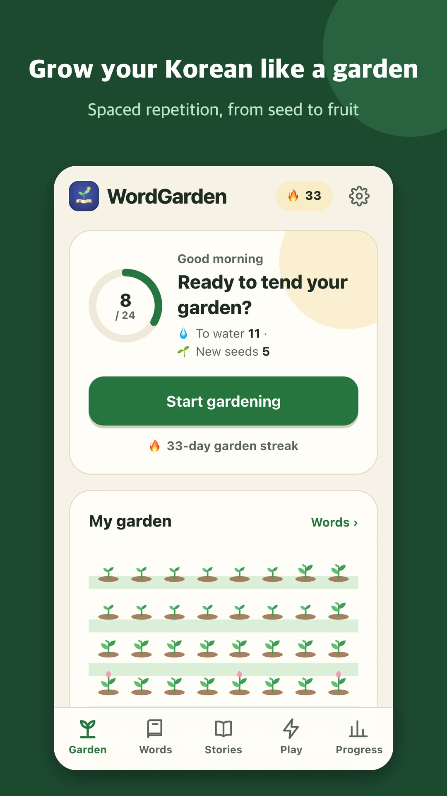

2-Minute Level Test
Estimates how many words you already know and starts you at the right tier across Levels 1–7.
One free, offline app with eight English and Korean vocabulary courses. Find your level in 2 minutes, water words right before you forget them, and build lasting memory with stories and games.
Try a live word card
Pick any of the eight courses to explore real vocabulary cards, toggle the new v2.2 simple English explanations, or try a review quiz that grows your plant.
Spaced repetition brings each word back right before you forget it. Tap a stage to see how memory takes root.
No accounts, no subscriptions, and zero ads during study—just calm daily sessions that compound.
Estimates how many words you already know and starts you at the right tier across Levels 1–7.
Water words at 1, 3, 7, 15, 35, and 90 days with listening, fill-in-the-blank, spelling, and explanation quizzes.
Learn all 24 Korean letters with names and sounds from day one, and spell Korean words without needing a Korean keyboard.
Read culturally tailored serialized stories packed with your words—tap any sentence for instant translation and audio.
Lightning Match, 60-Second True or False, and Sentence Builder generated directly from your own planted words.
No account required. All progress stays safely on your device with per-course JSON backup and zero ads while studying.
Click any screenshot to zoom in. Switch the language in the header to inspect that language’s native app screens.
Scroll horizontally or use the arrows
Since version 2.0, WordGarden, Hardin ng Salita, Bustani ya Maneno, Vườn Từ, and WordGarden: Korean all live inside one app. Each course keeps its own progress, and you can switch anytime in Settings.
영단어 15,440개 · 7단계 · v2.2 전 단어 쉬운 영어 해설 · 스토어 이름 ‘워드가든: 영단어 암기·영어 단어 외우기’
2분 어휘력 테스트로 내 수준부터 시작하고, 잊을 때쯤 물을 주는 망각곡선 복습으로 영단어를 꽃처럼 키워요. 영어 이야기 15장과 영단어 게임 3가지로 배운 단어를 다시 만나고, v2.2에서는 모든 단어에 쉬운 영어 해설과 해설 복습 퀴즈까지 더했어요. 앱 첫 화면에서 ‘영어’를 고르면 시작됩니다.
Matuto ng English at Korean sa Tagalog · 2 courses inside WordGarden
15,440 English words with Tagalog meanings, v2.2 simple English explanations, audio, stories and memory tips. Offline.
Download page →15,259 Korean words incl. 1,300+ work & EPS-TOPIK / TOPIK terms, Hangul 101, and v2.2 English explanations.
Download page →Independent app: not affiliated with HRD Korea, the Department of Migrant Workers (DMW) or NIIED (TOPIK). Sa unang screen ng WordGarden, piliin ang “Tagalog”, tapos piliin ang “English” o “Korean”.
Học từ vựng Tiếng Anh & Tiếng Hàn bằng tiếng Việt · 2 khóa học trong WordGarden
Hơn 15.000 từ tiếng Anh có nghĩa tiếng Việt, giải nghĩa tiếng Anh v2.2, ôn tập ngắt quãng, truyện và trò chơi offline.
Trang tải ứng dụng →Hơn 15.000 từ tiếng Hàn, bảng chữ cái Hangul, ghép âm tiết và từ vựng cho EPS-TOPIK / TOPIK.
Trang tải ứng dụng →Ứng dụng độc lập, không liên kết với HRD Korea. Ở màn hình đầu tiên của WordGarden, hãy chọn “Tiếng Việt”, rồi chọn “Tiếng Anh” hoặc “Tiếng Hàn”.
Kiswahili → Kiingereza & Kikorea · Kozi 2 ndani ya WordGarden
Jifunze Kiingereza (A1–C2) na Kikorea (pamoja na herufi 24 za Hangul) kwa Kiswahili, hata bila intaneti — ikiwa na hadithi ya Amani kutoka Mombasa hadi Seoul, methali za kila siku, na swichi ya Maelezo kwa Kiingereza (v2.2).
Kwenye skrini ya kwanza ya programu ya WordGarden (워드가든), chagua “Kiswahili” kuwa lugha yako, kisha uchague Kiingereza au Kikorea.
English → 한국어 · Learn Korean words & Hangul for English speakers
Start with Hangul 101 (24 letters with names and sounds), spell with syllable tiles with no Korean keyboard needed, and grow 15,000+ words through spaced repetition, A Year in Seoul (15 story chapters), and 3 games. Works offline.
On the first screen of the WordGarden (워드가든) app, choose “English” as the language you speak, then choose “Korean”.
워드가든은 iPhone에서는 App Store에서 바로 받을 수 있으며, Android는 Google Play 비공개 테스트를 마치고 정식 출시(프로덕션) 심사 대기 중이에요. 지금 바로 참여하려면 아래 절차를 따라 주세요 (무료).
WordGarden is live on the iPhone App Store. On Android, closed testing is complete and Google Play production access is currently under review. You can still join the beta for free:
‘참여’와 ‘설치’ 링크는 테스터로 등록된 Google 계정으로 로그인해야 열립니다. 등록 직후 반영까지 시간이 걸릴 수 있어요.
The “Opt in” and “Install” links work only while signed in with a registered tester Google account; activation can take some time after joining.